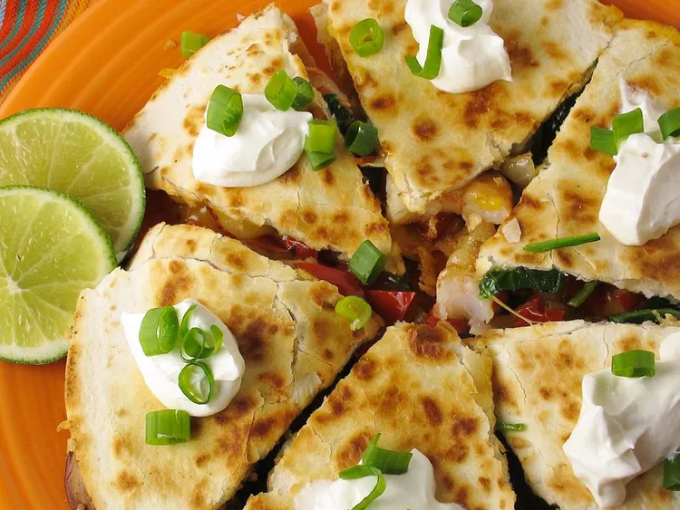

Shrimp Quesadillas

Description
These spicy shrimp quesadillas have a fajita-style shrimp and bell
pepper filling seasoned with cumin, chili powder, jalapeño, and lime.
Superb served warm with cilantro and sour cream.
Ingredients
- 2 tablespoons vegetable oil
- 1 onion, sliced
- 1 red bell pepper, sliced
- 1 green bell pepper, sliced
- 1 teaspoon salt
- 1 teaspoon ground cumin
- 1 teaspoon chili powder
- 1 pound uncooked medium shrimp, peeled and deveined
- 1 jalapeño pepper, seeded and minced
- 1 lime, juiced
- 1 teaspoon vegetable oil, or as needed
- 6 large flour tortillas
- 3 cups shredded Mexican cheese blend, divided
Steps
-
Heat 2 tablespoons vegetable oil in a large skillet over medium-high
heat. Add onion, red bell pepper, and green bell pepper; cook, stirring
frequently, until onion is translucent and peppers are soft, 6 to 8
minutes.
-
Add salt, cumin, and chili powder; stir to coat onion and bell peppers.
-
Add shrimp; cook and stir until shrimp are opaque and no longer pink
the center, 3 to 5 minutes. Remove skillet from heat and stir in minced
jalapeño and lime juice.
-
Heat a skillet over medium heat and brush with about 1 teaspoon
vegetable oil. Place one tortilla in the hot oil; spoon about 1/6 of the
shrimp filling and 1/2 cup Mexican cheese blend on one side of tortilla.
Fold tortilla in half.
-
Cook until bottom of tortilla is lightly browned, about 5 minutes; flip
and cook other side until lightly browned, 3 to 5 minutes. Repeat with
remaining tortillas and filling.